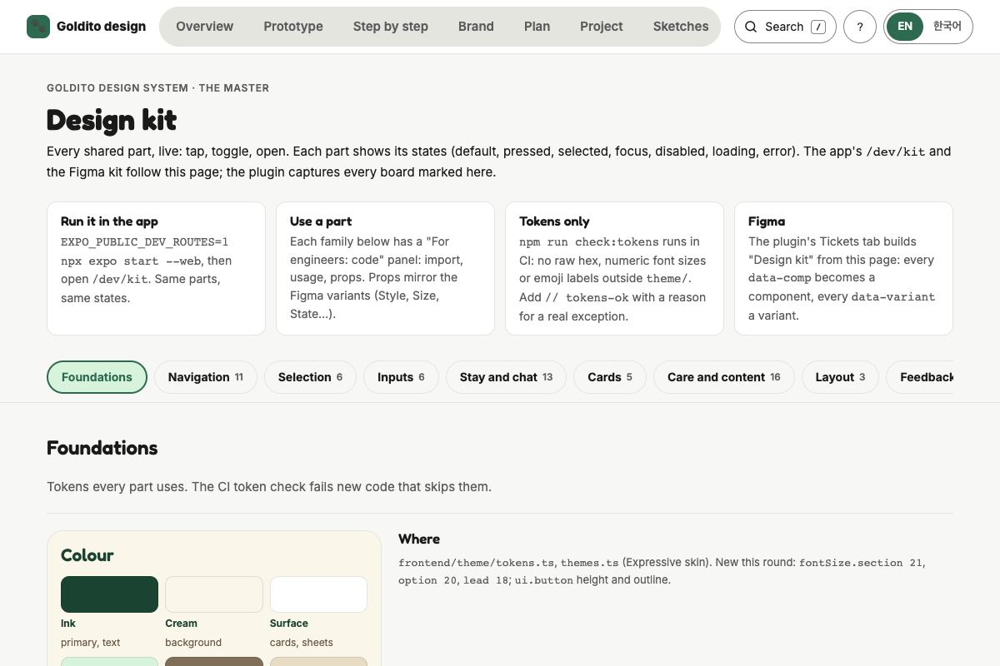
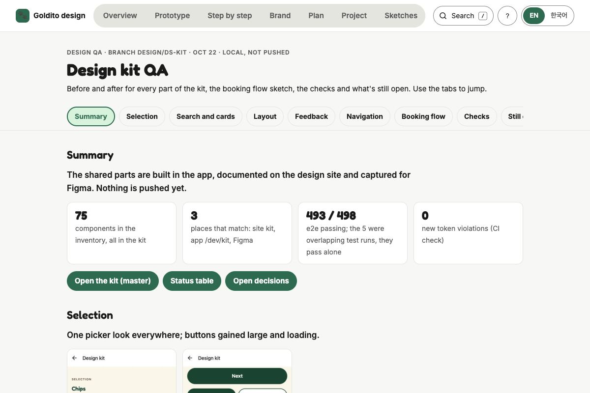
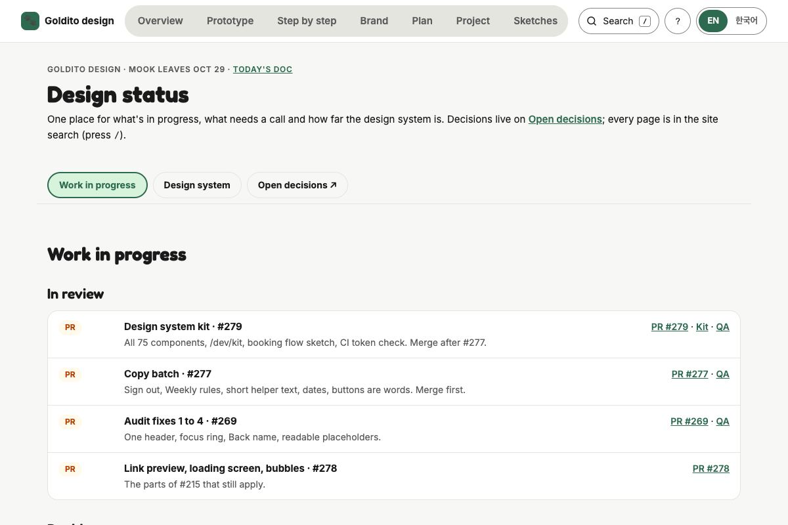
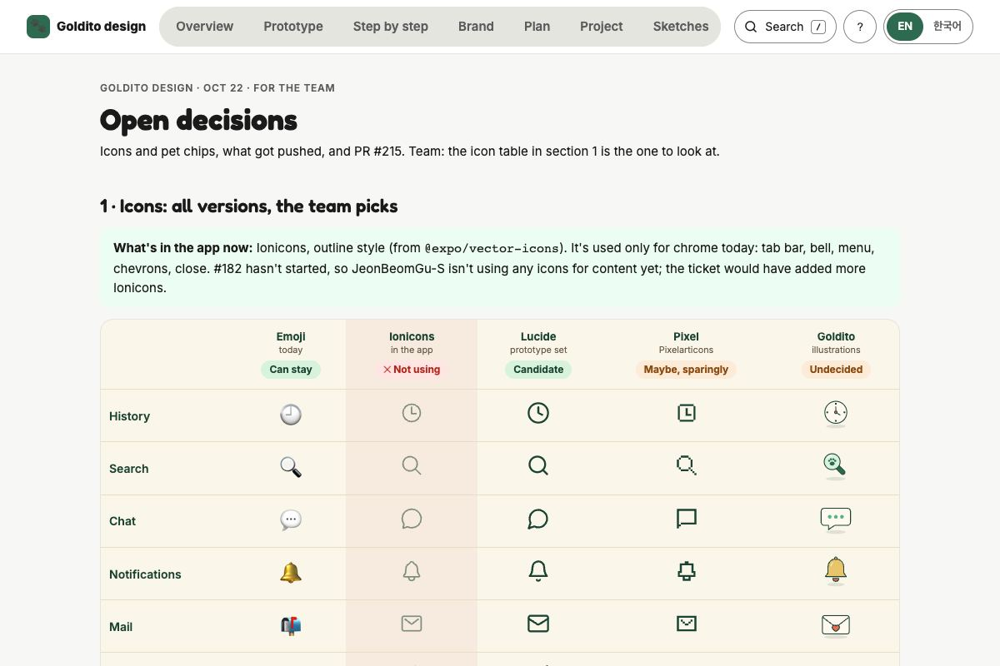
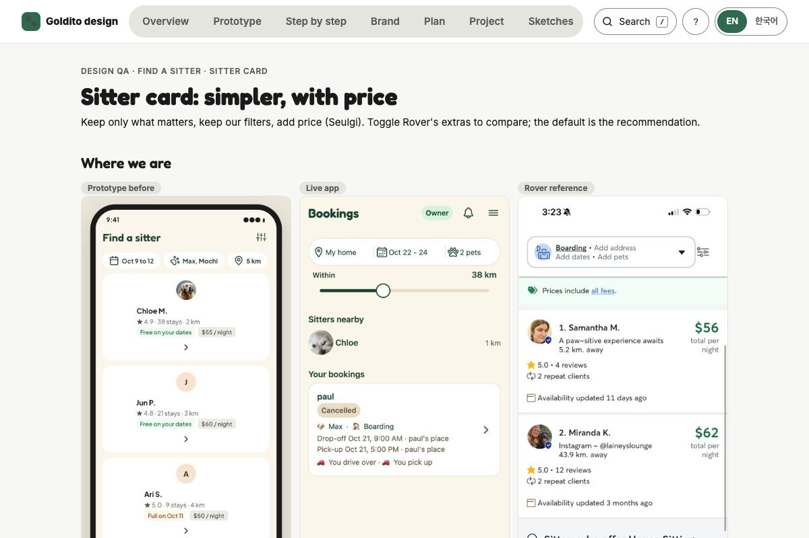
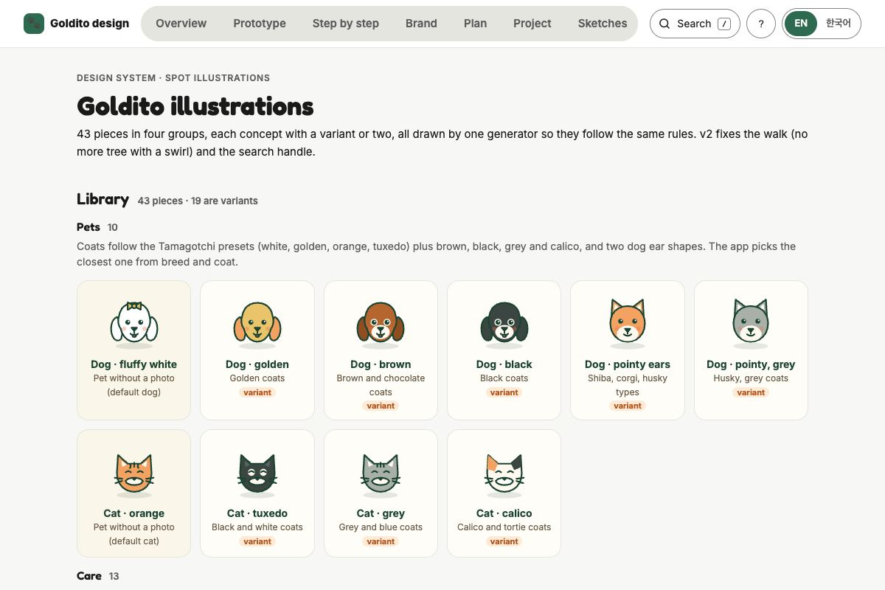
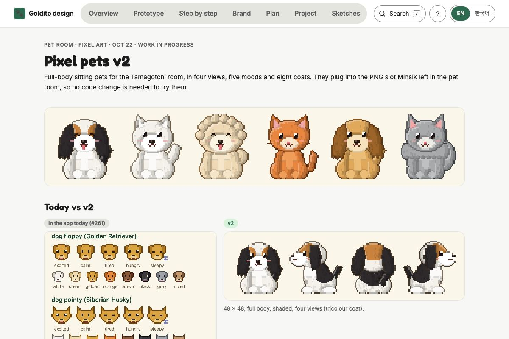

Worked on, what's left작업한 일, 남은 일
Done 10/21 to 10/22완료 10/21~10/22
- In review리뷰 중Audit fixes 1 to 4one header, focus ring, Back name, readable placeholders감사 수정 1~4헤더 통일, 포커스 링, 뒤로 버튼 이름, 플레이스홀더 대비PR #269 QA
- In review리뷰 중Copy batchSign out, Weekly rules, short helper text, dates, buttons are words문구 배치Sign out, Weekly rules, 짧은 도움말, 날짜 형식, 버튼은 글자로PR #277 QA
- In review리뷰 중Link preview, loading screen, bubbles#215 closed; the parts that still apply링크 미리보기, 로딩 화면, 말풍선#215는 닫고 아직 유효한 부분만PR #278
- Done완료Sitter card and search pillprice on the right; When / Pets / Within with quick picks시터 카드와 검색 필가격은 오른쪽, 날짜·펫·거리 빠른 선택Page
- Done완료Open decisionsnot Ionicons, Lucide front-runner; pet chips: photo, else breed photo, else illustration결정 사항Ionicons 제외, Lucide 유력; 펫 칩은 사진, 없으면 품종 사진, 없으면 일러스트Page
- In review리뷰 중Illustrations v243 pieces with coats and variants; waits for the icon pick일러스트 v2털색과 변형 포함 43개; 아이콘 결정 대기Library
- Done완료Design system kit, rounds 1 to 375 components on one page with states and code; /dev/kit; booking flow sketch; CI token check. Pushed as #279.디자인 시스템 키트 1~3차컴포넌트 75개를 상태와 코드와 함께 한 페이지에; /dev/kit; 예약 흐름 스케치; CI 토큰 검사. #279로 푸시Kit QA
- Done완료Figma pluginmint chips, no more stacked archive screens, Design kit ticket (10 boards, 134 instances)피그마 플러그인민트 칩, 겹쳐 쌓이던 화면 해결, 디자인 키트 (보드 10개, 인스턴스 134개)
- Waiting대기Pixel pets v2four views, coats, tricolour; the pet room now draws pets in code, so the format needs agreeing with Minsik픽셀 펫 v24방향, 털색, 삼색; 펫 방이 코드로 그리게 바뀌어서 민식님과 형식 합의 필요Page
To do 10/22할 일 10/22
- Done완료Design kit pushedPR for review; pages on GitHub Pages디자인 키트 푸시리뷰용 PR, 페이지 게시 완료PR #279 Kit
- Done완료Run the Figma plugin: Expressive screens, then Tickets, Design kit피그마 플러그인 실행: 화면 다음 티켓의 디자인 키트
- To do할 일Team picks the icon set today, then the #182 comment팀 아이콘 선택 오늘, 그다음 #182 코멘트Table #182
- To do할 일Product call: step-by-step booking (Mook and Minsik); play the sketch first단계별 예약 결정 (무크·민식); 스케치 먼저 체험QA
- To do할 일Backend: sitter facts in the search (Minsik, request below)백엔드: 시터 정보 검색에 추가 (민식님, 아래 요청)Request
- To do할 일Pixel pets: agree the role-letter format with Minsik픽셀 펫: 민식님과 역할 글자 형식 합의
- To do할 일About 20 breed photos for pet chips (Unsplash or #113)품종 사진 약 20장 (Unsplash 또는 #113)#113
- To do할 일Merge: #277, then #279, once CI is green (approved)머지: CI 통과 후 #277, 그다음 #279 (승인됨)
- To do할 일Handoff for Minsik by Oct 28 (Mook leaves Oct 29)민식님 인수인계 10/28까지 (무크 10/29 종료)
- To do할 일Pixel pets: rework the visualsnot there yet; redo the look before the code format픽셀 펫: 비주얼 다시아직 부족함, 형식 전에 룩부터 다시Current
- To do할 일Illustrations: more workon hold, library stays as is일러스트: 추가 작업보류, 라이브러리는 그대로Library
- To do할 일Step-by-step booking in the app, after today's list단계별 예약 앱에 적용, 오늘 목록 다음에Sketch
Visual notes비주얼 노트
Every doc from today. All of them are also in the site search: press / on any page.오늘 만든 문서 전부. 어느 페이지에서든 / 를 누르면 검색에도 있어요.







Request for Minsik: sitter facts in the search민식님 요청: 검색 결과에 시터 정보
search_sitters_nearby already returns distance and nightly rates. For the agreed sitter card, could it also return, per sitter: rating_avg (1 decimal, from reviews, null when none), stay_count (finished stays), and for the searched dates available (true or false) and first_full_day (a date, or null)? The card (SitterResultCard) already takes rating, stays and availability; nothing else changes on the frontend.search_sitters_nearby가 거리와 1박 요금은 이미 돌려줍니다. 합의한 시터 카드를 위해 시터마다 rating_avg(소수 1자리, 리뷰가 없으면 null), stay_count(완료된 숙박 수), 검색한 날짜 기준 available(true/false)과 first_full_day(날짜 또는 null)도 함께 받을 수 있을까요? 카드(SitterResultCard)는 rating, stays, availability를 이미 받을 수 있어서 프론트는 이 외에 바뀌는 게 없습니다.